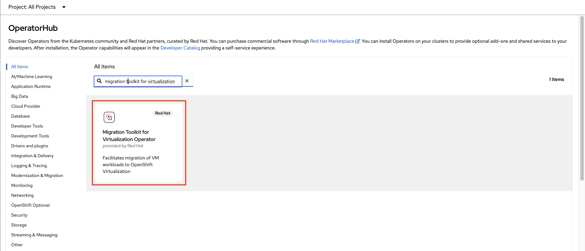

Install Migration Toolkit Virtualization Operator
Migration Toolkit for Virtualization
Refer Migration Toolkit for Virtualization (MTV) to import a virtual machine from VMware vSphere to OpenShift. The migration toolkit supports two "modes" of import:
-
Cold migration turns off the source virtual machine before starting the migration. This is the default migration type.
-
Warm migration copies data while the source virtual machine continues to run. Once the bulk of data has been migrated, the VM is shutdown and the final data is copied to the destination. The new VM can then be started, resulting in a much shorter period of downtime for the VM-hosted application.
The migration toolkit has already been deployed to your cluster using the Operator. Documentation for how to install and configure the Operator can be found here.
If you would like to learn more about how to configure the Migration Toolkit for Virtualization, please see here for VMware vSphere.
Prerequisites
You must install compatible versions of OpenShift Container Platform and OpenShift Virtualization.
The firewalls must enable traffic over the following ports:
-
Network ports required for migrating from VMware vSphere
Port
Protocol
Source
Destination
Purpose
443
TCP
OpenShift nodes
VMware vCenter
VMware provider inventory Disk transfer authentication
443
TCP
OpenShift nodes
VMware ESXi hosts
Disk transfer authentication
902
TCP
OpenShift nodes
VMware ESXi hosts
Disk transfer data copy
Review MTV Operator
Operator was preinstalled to be ued in this lab.
-
Navigate to Operators → Installed Operators and review the
Migration Toolkit for Virtualizationoperator.
| If you are performing this on your own setup then you can follow the below instructions to install the Operator. |
Install and configure the MTV Operator
-
Navigate to Operators → OperatorHub and filter for
Migration Toolkit for Virtualization -
Click the tile appeared and press Install
-
Review the Custom Resources Definition which are going to be created and without modify any option press Install
Select version release-v2.4 -
Like others Operators after the installation is required to create a Controller. Press Create ForkliftController for that purpose.
-
In the next screen press Create without modify any value
-
Ensure the
StatusisRunning,Successful -
Refresh web console when the banner appears
-
A left menu called Migration will appear